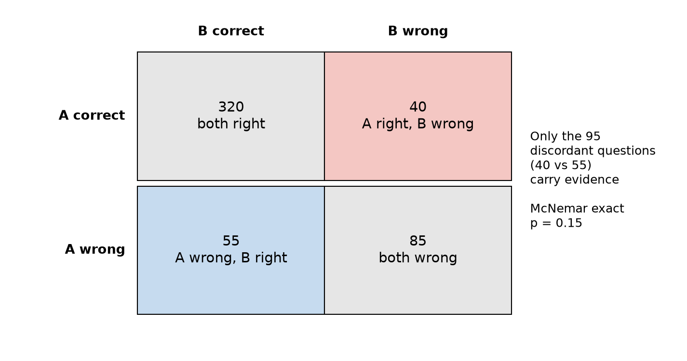

Eval study notes · Coding practice set
The question researchers actually bring you is almost never “what is this model’s accuracy?” It is “is checkpoint B better than checkpoint A?”, or “did this change help?” That is a comparison, and comparisons have a structure that single scores do not: both models answered the same questions. Using that structure is the single biggest free win in evaluation statistics, and it is exactly what McNemar’s test does. This chapter builds up to McNemar from the naive approach, the same way you would explain it at a whiteboard.
Keep the numbers from the last chapter. Model A answers 360 of 500 questions correctly (72.0 percent). Model B answers 375 (75.0 percent). The difference is three percentage points. Is that real, or could it be noise?
The first thing most engineers do is compute a standard error for each model and see if the intervals overlap. Model A’s standard error is 2.0 points, model B’s is 1.9. The standard error of the difference between two independent estimates is the square root of the sum of their variances: √(0.020² + 0.019²) = 2.8 points. The observed difference is 3.0, which is 1.08 standard errors. A z of 1.08 corresponds to a two-sided p-value of 0.28. By this analysis, the three-point gain is entirely unremarkable.
This analysis is not wrong, but it answers a different question from the one you have. It treats A’s 500 questions and B’s 500 questions as two independent samples, as if each model had been tested on a different random set. That throws away the most useful information you have.
Line up the two models’ answers question by question and sort every question into one of four boxes. On 320 questions both models were right. On 85 both were wrong. On 40, A was right and B was wrong. On 55, A was wrong and B was right.

Now look at what the 405 concordant questions tell you about whether B is better than A. Nothing. A question both models answered correctly is a question that is easy for both; a question both got wrong is hard for both. They add to each model’s score equally and cancel exactly in the difference. All of the evidence about which model is better lives in the 95 discordant questions, the 40 where A won and the 55 where B won.
The unpaired analysis did not know this. It saw each model’s 500 coin flips as independent noise and so it charged the comparison for variance that cancels. Question difficulty is the largest source of variance in a benchmark score, and pairing removes it from the comparison entirely.
Under the null hypothesis that the two models are equally good, each discordant question is equally likely to fall either way, like a fair coin. You saw 95 flips, 55 of which favoured B. How surprising is that if the coin is fair?
That is a straightforward binomial question: the probability of a split at least as lopsided as 55 to 40 out of 95 fair flips. The exact answer is p = 0.15. The classic chi-square version of McNemar’s test approximates it with the statistic (|b − c| − 1)² / (b + c) = (15 − 1)² / 95 = 2.06, which on a chi-square distribution with one degree of freedom also gives p = 0.15. (The “− 1” is a continuity correction; without it you get 2.37 and p = 0.12. Modern practice is to use the exact binomial version whenever b + c is below a few hundred, which sidesteps the question.)
So the paired test gives p = 0.15 where the unpaired test gave p = 0.28. Neither crosses the conventional 0.05 line, but the paired test is clearly sharper. An equivalent way to see the same thing is through the paired standard error. Define, for each question, the difference dᵢ = (B correct) − (A correct), which is +1, −1 or 0. The mean of dᵢ is the 3.0-point difference; its standard error is the standard deviation of dᵢ divided by √n, which comes to 1.95 points, against 2.8 for the unpaired calculation. The pairing shrank the error bar on the difference by about 30 percent for free, without asking a single extra question. A paired bootstrap, where you resample questions and recompute the difference each time, gives a 95 percent interval of −0.8 to +6.8 points, which agrees.
Here is the consequence that makes this worth knowing cold. If you had run the same comparison on 2,000 questions with the same proportions (160 A-only wins, 220 B-only wins), McNemar gives p = 0.002, decisively significant. Same models, same three-point gap; the difference is only how many discordant questions you observed. Statistical significance is a statement about your evidence, not about the size of the effect.
When you see two models evaluated on the same items, think paired test: McNemar for pass/fail, paired t-test or paired bootstrap for continuous scores, permutation test if you want no distributional assumptions at all. An eval platform that stores only aggregate scores per run cannot do any of these, which is the strongest argument for storing per-item results for every run, keyed by a stable item id. If you remember one design decision from this chapter for the interview, make it that one.
You will be asked what a p-value means, or you will want to explain it to a researcher, so it is worth getting the sentence exactly right. A p-value is the probability, computed assuming the null hypothesis is true, of seeing a result at least as extreme as the one you saw. For McNemar here: if A and B were truly equally good, a split of 55 to 40 or more lopsided (in either direction) would happen about 15 percent of the time by chance alone.
It is not the probability that the null hypothesis is true. It is not the probability that B is better. It is not one minus the probability that the result will replicate. These three misreadings are common enough that the American Statistical Association published a statement on them in 2016, and an interviewer with a research background may probe for exactly this. The p-value conditions on the null being true and asks about the data; the misreadings flip that around and ask about the hypothesis given the data, which a p-value cannot answer without a prior.
Two further points separate someone who has used p-values in anger from someone who has only computed them. First, a p-value says nothing about how big an effect is. A 0.3-point improvement on a benchmark with 100,000 items can have a tiny p-value and be practically meaningless; a 5-point improvement on 30 items can have a large p-value and be very real. Always report the effect size and its confidence interval alongside the p-value, and in practice lead with the interval, because the interval contains the p-value’s information (if the 95 percent interval on the difference excludes zero, p < 0.05) and also tells you the plausible size. Second, “not significant” is not “no difference”. The 500-question comparison above failed to reach significance, and the right reading is that the data cannot distinguish a 0-point improvement from a 6-point one, not that the change did nothing.
In practice you will meet four situations, and the choice follows directly from the structure of the data. For pass/fail results on the same items, use McNemar (exact). For continuous per-item scores on the same items, such as partial credit or judge scores, use a paired t-test on the per-item differences if there are more than about 30 items and the differences are not wildly skewed, and a paired bootstrap or a permutation test otherwise. For results on different item sets, which happens when comparing against a published number you cannot rerun, you are stuck with the unpaired two-proportion test and its wider error bars, and you should say so. For more than two models, run pairwise paired tests and then correct for multiple comparisons, which is Chapter 10’s subject, or move to a model that ranks all of them jointly, which is Chapter 11’s.
The permutation test deserves a sentence because it is the most intuitive of all and easy to code in an interview. Under the null hypothesis that A and B are interchangeable, swapping which model gets credit for each question’s result should not matter. So randomly swap the A and B labels within each question, recompute the difference, and do that 10,000 times. The fraction of shuffled differences at least as large as the observed one is your p-value. For pass/fail data this reproduces McNemar’s exact test; for continuous data it is a distribution-free paired test.
A last trap. Researchers who expected B to be better are tempted to use a one-sided test, which halves the p-value (0.15 becomes 0.075 here). This is legitimate only if you committed in advance to ignoring a result in the other direction, which almost nobody actually does: if B had been three points worse, they would have wanted to know. Default to two-sided and treat a switch to one-sided after seeing the data as a red flag.
When two models answer the same questions, compare them pairwise. Only the discordant questions carry information, and McNemar’s test is just a fair-coin test on those: 55 versus 40 out of 95 gives p = 0.15, where the naive unpaired comparison of the same data gives 0.28. Pairing typically cuts the error bar on a difference by a third, free. A p-value is the chance of data this extreme if there were no difference; it is not the chance there is no difference, it carries no information about effect size, and “not significant” means “not enough evidence”, not “no effect”. Lead with the confidence interval on the difference. And none of this is possible unless the platform stores per-item results with stable ids for every run.